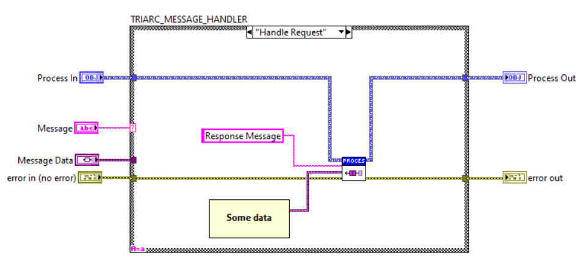

Requests and Responses
A Triarc application consists of processes that run independently and communicate by exchanging messages. Broadcasts can be used to publish the result of handling a message. In addition, the request message type can be used for blocking and non-blocking requests, as described below.
Synchronous Requests and Responses
Sometimes it is useful to make a synchronous request to a process.
When something should be returned from the process to the sender of a message, use Request Message.vi.
The process that receives the request must call Response Message.vi to return a response to the requester.
Response Message.vi is called from the case in Handle Messages.vi that handles this specific message, as shown below, or from an async action launched from that case (see Responding from an Async Handler).

A request is a serialized operation: Request Message.vi blocks until a response is returned or the timeout expires.
If a request is made from another process, that process is stuck waiting for the response and cannot handle any other message while it waits.
This introduces a risk of deadlocks and other quirks of concurrent systems, so use requests with care.
The Triarc request-response pattern keeps coupling low, because the request and the response are implemented entirely in the responding class, which exposes the request API VI. Changing the implementation only requires changes to the responding class, as long as the returned data type stays the same. If the type has to change, the API VI changes, which gives a compile-time error in the callers instead of a hidden bug.
Rules for Requests
- Respond on every path. The case handling a request must call
Response Message.vialso when an error occurred. Otherwise the requester waits until its timeout expires. - Respond exactly once. The requester keeps only one response. A second response sent before the first is read replaces it.
- Pass errors back. An error wired into
Response Message.viis returned to the requester as error 9515, The Request caused an error in the process. - Choose a timeout longer than the work. The default timeout, -1, waits forever. Use a finite timeout for anything that talks to hardware or the network.
- Do not request from yourself. A request from inside the process loop to the same process would wait for itself. It returns error 9507.
- Only request from running processes. A request to a process that is not started or running returns error 9506.
| Error | Meaning |
|---|---|
| 9502 | The process was stopped while the request was waiting. |
| 9505 | The request timed out. Timed out? is also true. |
| 9506 | The process is not running. |
| 9507 | Request to self from inside the process loop. |
| 9510 | The response could not be delivered, for example because the request had already timed out. |
| 9515 | The process returned an error with the response. |
Responding from an Async Handler
Some requests take a long time to handle, for example a move that waits for hardware. Handling them in the case would block the process loop, so the process could not handle other messages, such as a stop, until the request is done.
Instead, the case that receives the request can start the work and launch an Async Handler, and the async action calls Response Message.vi when the work is done.
The requester waits as usual, but the process loop is free to handle other messages in the meantime.
- The response is carried by the class data that is passed to
Launch Async Handler.vi, so launch the action from the case that receives the request. - The action can respond at any time, also after the process has handled other messages, and also after
Leave Process Loop.vihas been called on the class data. - The case must not respond when it has launched an action that responds. The action must respond on every path, including errors and cancellation.
- If the case decides not to launch the action, for example because the request is rejected, it responds itself.
- Choose the requester's timeout to cover the whole operation, not only the time in the case.
A helper loop cannot respond to a request, because it is not launched from the case that receives the request.
Asynchronous Requests
In some cases a synchronous request is acceptable or even desirable, but in many situations a blocking wait for a response is not.
The recommended way to solve this in Triarc is Async Request Message.vi, introduced in version 1.0.24.
In addition to the Message string and the Message Data variant, Async Request Message.vi takes a Callback.
Callback is an interface with one method, Callback.vi, which receives the response message and data.
When the receiving process calls Response Message.vi, the Callback.vi of the object passed to Async Request Message.vi is called.
This is a very powerful way to implement requests, as it does not couple the callee directly to the caller. There is an indirect coupling, though: if the data or formatting of the response changes, it may break the function of the caller.
A common implementation is to let the requesting process implement Callback, and have its Callback.vi send the response to the requesting process as a message.
Callback.vi is called by Response Message.vi, so it runs in the process loop of the responding process.
It should return quickly, and it must not access the data of the requesting process directly.
If the requesting process passes itself as Callback from inside its own process loop, call Leave Process Loop.vi on the object first, so that API VIs called on it in Callback.vi send messages.
Request Message.vi is itself built on Async Request Message.vi, with the Synchronous Request Callback class waiting for the response.
Asynchronous Requests prior to Version 1.0.24
Before Async Request Message.vi existed, asynchronous requests were made from an Async Handler.
This still works and is sometimes useful.
The request API VI is called in Async Action.vi, and Launch Async Handler.vi is called when the request needs to be dispatched.
The request then runs asynchronously to the process, and the same process can even dispatch several concurrent requests and wait for their responses.
When the response returns, it is received in Async Action.vi, which can forward it to the process as a regular message.
Note that the async action runs outside the process loop and cannot change the state of the process directly, but it can send messages to the process that update the state.
Another caveat is that a change of state in the process is not propagated to a running async action.
An important advantage of this implementation is that the requesting class decides which message is sent to its process when the response returns.